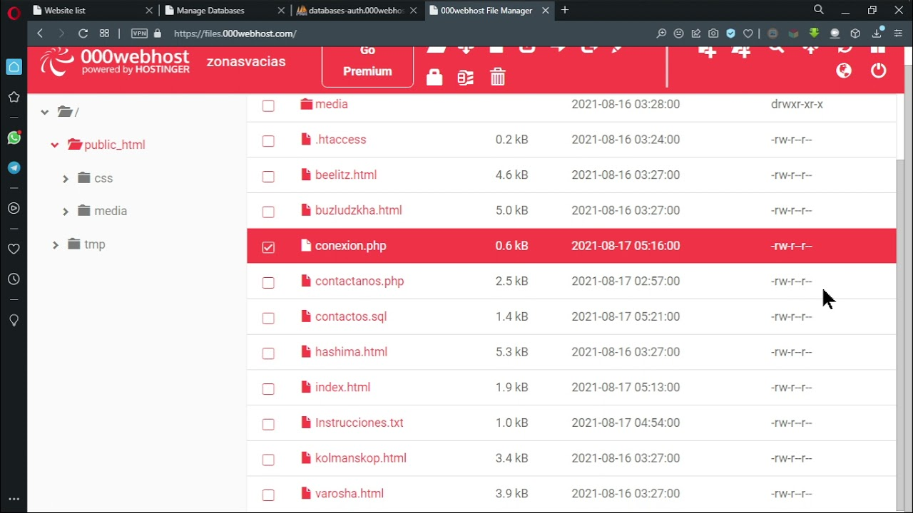

000webhost
000webhost es un proveedor de alojamiento web gratuito muy popular, conocido por ofrecer servicios sin costo que son especialmente atractivos para principiantes y pequeños proyectos web. Aquí tienes un resumen detallado de lo que ofrece y sus características principales:
Características Principales
1. Alojamiento Gratuito:
- Espacio en Disco: Ofrece 300 MB de espacio en disco, suficiente para sitios web pequeños.
- Ancho de Banda**: Incluye 3 GB de ancho de banda mensual.
- Sin Publicidad**: A diferencia de muchos servicios gratuitos, 000webhost no impone publicidad en los sitios alojados.
2. Soporte de Tecnologías Web:
- PHP y MySQL**: Soporte para PHP y bases de datos MySQL, lo que permite crear sitios dinámicos y aplicaciones web.
- FTP y Administrador de Archivos: Acceso FTP y un administrador de archivos basado en la web para cargar y gestionar archivos.
3. Constructor de Sitios:
- Zyro Website Builder: Incluye un constructor de sitios web fácil de usar con plantillas prediseñadas.
4. Herramientas Adicionales:
- Soporte para WordPress: Puedes instalar WordPress con facilidad.
- Subdominios Gratis: Ofrece subdominios gratuitos bajo el dominio 000webhostapp.com.
5. Panel de Control:
- cPanel: Un panel de control personalizado para gestionar cuentas, bases de datos, y archivos.
Ventajas
- **Costo**: Al ser gratuito, es ideal para estudiantes, principiantes y pequeñas pruebas.
- **Facilidad de Uso**: El constructor de sitios y el cPanel son intuitivos.
- **Sin Publicidad**: Mejora la experiencia del usuario final y da un aspecto más profesional.
Desventajas
- **Limitaciones de Recursos**: El espacio en disco y el ancho de banda son bastante limitados.
- **Rendimiento y Confiabilidad**: No es tan confiable o rápido como los servicios de pago. Puede experimentar tiempos de inactividad.
- **Soporte Técnico**: El soporte gratuito puede ser limitado y menos prioritario en comparación con servicios de pago.
Planes de Pago
000webhost también ofrece planes premium a través de Hostinger, que incluyen más recursos, mejor rendimiento, y soporte técnico avanzado. Estos planes son adecuados para sitios web más grandes y proyectos más serios.
Uso Típico
000webhost es especialmente útil para:
- **Aprender y Experimentar**: Perfecto para quienes están aprendiendo a desarrollar sitios web o experimentando con nuevas ideas.
- **Sitios Web Pequeños**: Blogs personales, portafolios, y pequeñas tiendas online.
- **Proyectos Escolares o Universitarios**: Ideal para estudiantes que necesitan un entorno de pruebas para proyectos.
Cómo Empezar
1. **Registro**: Regístrate en su sitio web con una dirección de correo electrónico.
2. **Crear un Sitio**: Utiliza el constructor de sitios o sube tus propios archivos.
3. **Configuración Adicional**: Configura bases de datos, subdominios y otros elementos según tus necesidades.

TRIMESTRE 1